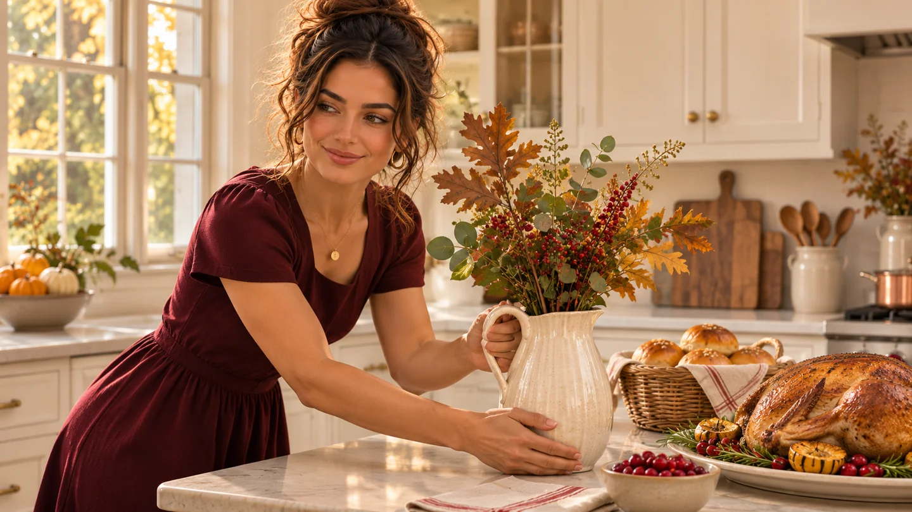

A Thanksgiving That Feels Like Home
By Lexi · Lifestyle

By the time everyone sits down, something on my Thanksgiving table is usually missing. The butter is still in the fridge. The good serving spoon is in the dishwasher. Once, I found the cranberry sauce after dessert. Everyone survived, including the cranberry sauce.
If you’re hosting today, here’s the little edit I’d make before anyone rings the doorbell. Clear enough space for the serving dishes. Put a pitcher of water where people can reach it. Then pick one thing you’ll enjoy seeing when you sit down. For me, that’s usually a low arrangement of clipped greenery in a small pitcher. It takes two minutes, and I can still see the person across from me.
Give your guests something to do
When someone asks how they can help, I have a terrible habit of saying, “Oh, I’m fine,” while holding three things and looking for a fourth. A better answer is “Would you pour the water?” or “Can you put the rolls in that basket?” Give them a job they can finish without needing a tour of your kitchen. Some of my favorite conversations happen while someone is looking through the silverware drawer.
And if you’re the guest who gets there early, bringing the coats to a spare room is an excellent job. So is being the person who actually knows where the corkscrew is.
Put out the things people came to eat
There’s usually one dish someone has been thinking about all week. It might be the stuffing, or the rolls, or the pie someone picked up on the way over. Give that dish a good spot on the table. And if two people brought the same pie, I see no reason to make either one wait in the kitchen.
I also like to set out the leftover containers before dinner. It makes it easier to send someone home with the piece of pie they wanted without turning the end of the evening into a search for matching lids. If there’s a roll left for tomorrow, I’m putting a slice of sharp cheddar in it and calling that lunch. I’ve been looking forward to it almost as much as dinner.
Stay at the table a little longer
When the plates start to empty, I’m always tempted to get up and start clearing. This year, I’d like to stay long enough to hear the end of the story someone started during dinner. If everyone wants coffee, I’ll put the pot on and bring the mugs back to the table.
However you’re spending today, I hope there’s something good on your plate and a moment you’d happily stretch by ten minutes.
Happy Thanksgiving.